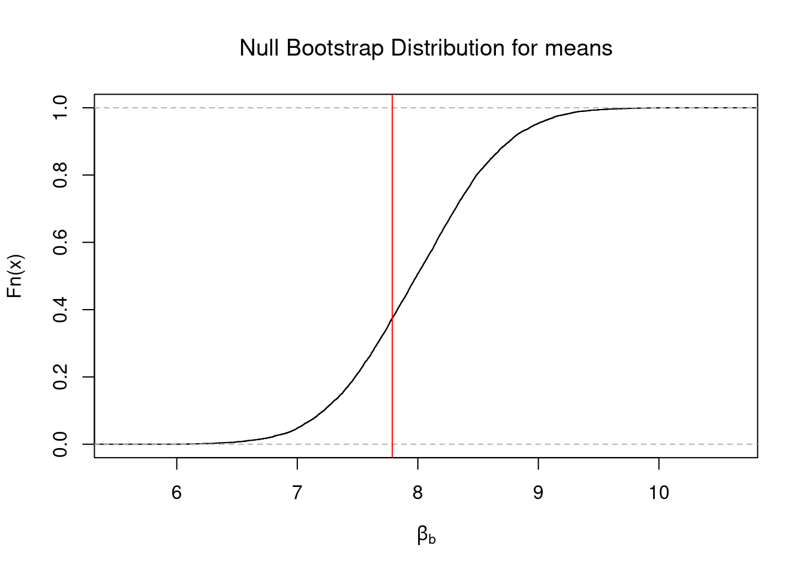
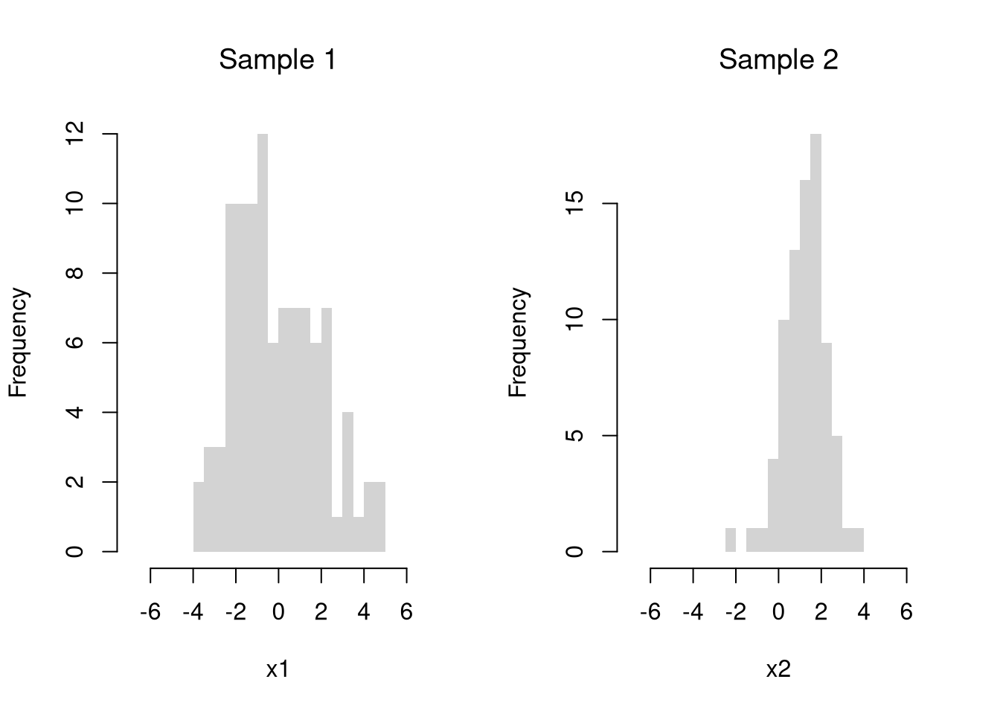

6 Hypothesis Tests
6.1 Basic Ideas
In this section, we test hypotheses using data-driven methods that assume much less about the data generating process. There are two main ways to conduct a hypothesis test to do so: inverting a confidence interval and imposing the null.
Invert a CI.
One main way to conduct hypothesis tests is to examine whether a confidence interval contains a hypothesized value. We then use this decision rule
- reject the null if value falls outside of the interval
- fail to reject the null if value falls inside of the interval
Code
sample_dat <- USArrests$Murder
sample_mean <- mean(sample_dat)
n <- length(sample_dat)
Jmeans <- sapply(1:n, function(i){
dati <- sample_dat[-i]
mean(dati)
})
hist(Jmeans, breaks=25,
border=NA, xlim=c(7.5,8.1),
main='', xlab=expression( bar(X)[-i]))
# CI
ci_95 <- quantile(Jmeans, probs=c(.025, .975))
abline(v=ci_95, lwd=2)
# H0: mean=8
abline(v=8, col=2, lwd=2)
Impose the Null.
We can also compute a null distribution: the sampling distribution of the statistic under the null hypothesis (assuming your null hypothesis was true). We use the bootstrap to loop through a large number of “resamples”. In each iteration of the loop, we impose the null hypothesis and re-estimate the statistic of interest. We then calculate the range of the statistic across all resamples and compare how extreme the original value we observed is. We use a 95% confidence interval of the null distribution to create a rejection region.
Code
sample_dat <- USArrests$Murder
sample_mean <- mean(sample_dat)
# Bootstrap NULL: mean=8
set.seed(1)
Bmeans0 <- sapply(1:10^4, function(i) {
dat_b <- sample(sample_dat, replace=T)
mean_b <- mean(dat_b) + (8 - sample_mean) # impose the null by recentering
return(mean_b)
})
hist(Bmeans0, breaks=25, border=NA,
main='', xlab=expression( bar(X)[b]) )
ci_95 <- quantile(Bmeans0, probs=c(.025, .975)) # critical region
abline(v=ci_95, lwd=2)
abline(v=sample_mean, lwd=2, col=2)
6.2 Default Statistics
p-values.
This is the frequency you would see something as extreme as your statistic when sampling from the null distribution.
There are three associated tests: the two-sided test (observed statistic is extremely high or low) or one of the one-sided tests (observed statistic is extremely low, observed statistic is extremely high). E.g.
- \(HA: \bar{X} > 8\) implies a right tail test
- \(HA: \bar{X} < 8\) implies a left tail test
- \(HA: \bar{X} \neq 8\) implies a two tail test
In any case, typically “p<.05: statistically significant” and “p>.05: not statistically significant”.
One sided example
Code

Code
Two sided example
Code
# Two-Sided Test, ALTERNATIVE: mean < 8 or mean >8
# Prob(boot0_means > sample_mean or -boot0_means < sample_mean)
Fhat0 <- ecdf(Bmeans0)
p_left <- Fhat0(sample_mean) #Left Tail
p_right <- 1 - Fhat0(sample_mean) #Right Tail
p <- 2*min(p_left, p_right)
if(p >.05){
message('fail to reject the null that sample_mean=8 at the 5% level')
} else {
message('reject the null that sample_mean=8 in favor of either <8 or >8 at the 5% level')
}t-values.
A t-value standardizes the statistic you are using for hypothesis testing: \[ t = (\hat{\mu} - \mu_{0}) / \hat{s_{\mu}} \]
Code
There are several benefits to this:
- makes the statistic comparable across different studies
- makes the null distribution not depend on theoretical parameters (\(\sigma\))
- makes the null distribution theoretically known asymptotically (approximately)
The last point implies we are dealing with a symmetric distributions: \(Prob( t_{boot} > t ~\text{or}~ t_{boot} < -t) = Prob( |t| < |t_{boot}| )\).4
Code
set.seed(1)
boot_t0 <- sapply(1:10^3, function(i) {
dat_b <- sample(sample_dat, replace=T)
mean_b <- mean(dat_b) + (8 - sample_mean) # impose the null by recentering
# jack ses
jack_se_b <- sd( sapply(1:length(dat_b), function(i){
mean(dat_b[-i])
}) )
jack_t <- (mean_b - mean0)/jack_se_b
})
# Two Sided Test
Fhat0 <- ecdf(abs(boot_t0))
plot(Fhat0, xlim=range(boot_t0, jack_t),
xlab=expression( abs(hat(t)[b]) ),
main='Null Bootstrap Distribution for t', font.main=1)
abline(v=abs(jack_t), col='red')
6.3 Two-Sample Differences
Suppose we have 2 samples of data.
Each \(X_{is}\) is an individual observation \(i\) from the sample \(s=1,2\). (For example, the wages for men and women in Canada. For another example, homicide rates in two different American states.)
Code
For simplicity, we will assume that each \(X_{is}\) is an independent observation.
Code

There may be several differences between these samples. Often, the first summary statistic we investigate is the difference in means.
Equal Means.
We often want to know if the means of different sample are different in . To test this hypothesis, we compute the sample mean \(\overline{X}_{s}\) over all observations in each sample and then examine the differences term \[\begin{eqnarray} D = \overline{X}_{1} - \overline{X}_{2}, \end{eqnarray}\] with a null hypothesis of \(D=0\).
Code
# Differences between means
m1 <- mean(x1)
m2 <- mean(x2)
d <- m1-m2
# Bootstrap Distribution
boot_d <- sapply(1:10^4, function(b){
x1_b <- sample(x1, replace=T)
x2_b <- sample(x2, replace=T)
m1_b <- mean(x1_b)
m2_b <- mean(x2_b)
d_b <- m1_b - m2_b
return(d_b)
})
hist(boot_d, border=NA, font.main=1,
main='Difference in Means')
# 2-Sided Test
boot_ci <- quantile(boot_d, probs=c(.025, .975))
abline(v=boot_ci, lwd=2)
abline(v=0, lwd=2, col=2)
Just as with one sample tests, we can standardize \(D\) into a \(t\) statistic. In which case, we can easily compute one or two sided hypothesis tests. Note, however, that we have to compute the standard error for the difference statistic, which is a bit more complicated.
Other Differences.
The above procedure generalized from differences in “means” to other statistics like “quantiles”.
Code
# Bootstrap Distribution Function
boot_fun <- function( fun, B=10^4, ...){
boot_d <- sapply(1:B, function(b){
x1_b <- sample(x1, replace=T)
x2_b <- sample(x2, replace=T)
f1_b <- fun(x1_b, ...)
f2_b <- fun(x2_b, ...)
d_b <- f1_b - f2_b
return(d_b)
})
return(boot_d)
}
# 2-Sided Test for Median Differences
# d <- median(x2) - median(x1)
boot_d <- boot_fun(median)
hist(boot_d, border=NA, font.main=1,
main='Difference in Medians')
abline(v=quantile(boot_d, probs=c(.025, .975)), lwd=2)
abline(v=0, lwd=2, col=2)
Note that these estimates suffer from a finite-sample bias, which we can correct for. Also note that bootstrap tests can perform poorly with highly unequal variances or skewed data.
Code
# 2-Sided Test for SD Differences
#d <- sd(x2) - sd(x1)
boot_d <- boot_fun(sd)
hist(boot_d, border=NA, font.main=1,
main='Difference in Standard Deviations')
abline(v=quantile(boot_d, probs=c(.025, .975)), lwd=2)
abline(v=0, lwd=2, col=2)
1 - ecdf(boot_d)(0)
# Try any function!
# boot_fun( function(xs) { IQR(xs)/median(xs) } )In another statistics class, you will learn the math behind the null t-distribution. In this class, we skip this because we can simply bootstrap the t-statistic too.↩︎